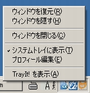
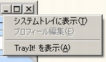

|
紹介
trayit! はウィンドウの最小化時にタスクバーの貴重なスペースを節約します。
trayit! が適用されたアプリケーションは
システムトレイに小さなアイコンを表示します。
（システムトレイとは「通知領域」とも呼ばれるタスクバーの右側、時計が表示される部分を指します。）
アプリケーションのウィンドウを最小化したとき、このシステムトレイのアイコンがタスクバーのアプリケーション名ボタンの代用をつとめます。
バックグラウンドでＥメールの受信を行ったり Real Player を動作させるといった、ウィンドウを表示せずにプログラムを長時間実行したい場合に重宝するでしょう。
TrayIt! の使用方法
trayit! はWindows 95/98/Me, NT/2000/XP/Vista 上で動作します。また、インストール作業を必要としません。
適当なフォルダを作成し、 TrayIt!.exe と TrayIt!.dll をそのフォルダにコピーしてください。
TrayIt! は、初回起動時に簡単な使用方法を記したダイアログ・ウィンドウを表示します。
システム起動時にTrayIt! を起動させるスタートアップ登録の方法は、「オプション」画面の「スタートアップ登録」項目をチェックしてください。
|

 |
TrayIt! のおもなオプション
メニューの編集/オプションから TrayIt! の動作をカスタマイズすることができます。
-
「TrayIt! をスタートアップに登録」
- ユーザーのスタートアップフォルダにショートカットを作成します。
-
「トレイアイコンのシングルクリックを使用」
-
システムトレイのアイコンをシングルクリックで操作するようにします（デフォルトではダブルクリックで操作）。
- 「同種アプリのトレイアイコンをグループ化」 - 同じアプリケーションで複数のウィンドウを開いている（たとえばメモ帳を複数起動している）とき、それらをグループとして一個のトレイアイコンで表示し、一括操作ができるようにします。
-
「最前面にあるときは最小化、背後に隠れているときはアクティブ化」
- トレイのアイコンをクリックしたとき、最前面にあるウィンドウならば最小化を行い、他のウィンドウの背後にあるウィンドウの場合はそのプログラムをアクティブにします。
ウィンドウのプロフィールに関するおもなオプション:
- 「
トレイアイコン表示時のウィンドウタイトルのマッチパターン」
- このオプションを有効にすれば、TrayIt! が適用されるアプリケーションのウィンドウをパターンで指定できます。
-
「SDI タイプのアプリケーションをハンドル （Excel,PowerPoint,MS Project 等）」
- TrayIt! は一つのウィンドウだけを持つアプリケーションだけを正しくハンドルできます。しかし、タスクバー領域に複数のボタンを表示するタイプのアプリケーションなら正しくハンドルすることが可能です。
TrayIt!
の手動起動時に最小化した状態で起動させるには、ショートカットを作成しプロパティのリンク先に「
/H」をパラメータとして追加してください
免責 -- インストール前にお読みください。
このソフトウェアは明示的にも、暗示的にも一切の保障の無い「ありのまま」の状態で提供されます。
TrayIt! はパターンに部分一致するウィンドウタイトルを探します。
TrayIt! は左から右へとパターンを探し、最初に一致したところ見つければそこで探すのをやめます。
パターンは大文字と小文字を区別しません。'*' （アスタリスク）と '?' （クエスチョン）をワイルドカードに使用できます。
'^' （キャレット）が接頭すると補集合の意味となり、そのパターンを含まないウィンドウタイトルを探します。
それぞれのパターンは '|' （パイプ）で区切ってください。
例：
Documents and Settings|Common Files
エクスプローラのプロフィールで上記を指定すれば、このふたつの文字列のいずれかをタイトルに含むのフォルダだけがトレイアイコン表示されます。
^Common Files
'^' （キャレット）が接頭されているため、「Common Files」
という文字列が含まれてないタイトルを持つフォルダだけをトレイアイコン表示します。
-
「ウィンドウを最小化 / TrayIt! 起動時」
- 指定アプリケーションのウィンドウが開かれているときにTrayIt! を起動すると、指定アプリケーションのウィンドウを自動的に最小化します。
また、TrayIt! が起動されている状態で指定アプリケーションを起動すると、ウィンドウが最小化された状態で起動します。
これはアプリケーションのショートカットのプロパティで、実行時の大きさを「最小化」に指定することと同様の効果を持ちます。
最新バージョンがうまく動作しない場合に使用してください。
（例： C:\Program Files\trayit_4_6_5_1\TrayIt!.exe /H）。
trayIt! は完全に
FREE
なソフトウェアです。良識のあるサイトなら、お気軽にアップロードしていただいてかまいません。
ソフトウェアの作成者とその組織はソフトウェア使用の当事者および第三者が蒙った損失、データの喪失、偶発的、必然的および例外的損害に対し一切の賠償責任を負いません。